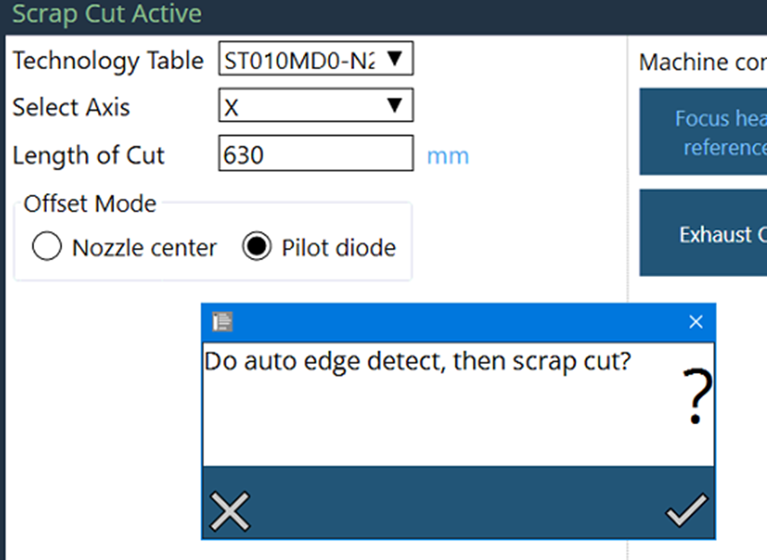

Corte de desperdicios
La función de corte de desperdicios se utiliza para cortar el área restante no utilizada de la chapa manualmente. Esta característica es útil para cortar el material restante de una chapa delgada para tener un manejo más sencillo de una chapa rectangular.Cuando se activa este programa, el usuario debe introducir la longitud de corte a lo largo del eje X o Y. La máquina comenzará a cortar desde la posición actual del cabezal de corte y continuará hasta la longitud especificada a lo largo del eje elegido.Además, el usuario puede elegir la tabla de tecnología adecuada y seleccionar el modo de desplazamiento deseado para la operación.La distancia de congelación de altura determina cuándo debe dejar de ajustar el control de altura. Se debe establecer un valor entre 1 y 10 mm, que indica con cuánta antelación se congelará el control de altura. Se recomienda ajustar este valor dentro del rango de 10 mm. El operador puede modificar este valor según sea necesario en función de los requisitos de corte.

Procedimiento:
-
Utilice el centro de la boquilla/diodo piloto para capturar el offset del trabajo (Seleccione la esquina de la chapa con tolerancia de 5 mm).
-
Ejecutar el programa.
-
De acuerdo con la distancia de congelación de altura de 10 mm, congelará el control de altura desde el offset de trabajo. es decir, congelará desde la distancia de 5 mm interior y 5 mm exterior en un total de 10 mm de distancia. Una vez completada la distancia de congelación de 10 mm, se proyectará desde fuera 5 mm y entrará en un flujo láser hasta que se configure la longitud de corte.
-
Se ha añadido la opción de realizar la detección automática de bordes, para encontrar el borde exacto de la chapa y luego iniciar el corte de desechos :
 -
Si se selecciona No, el programa continuará con la posición actual.
-
Si se selecciona Sí, la detección de bordes se realizará desde la posición actual moviéndose en la dirección opuesta durante 20 mm.
-
Si es capaz de encontrar el borde dentro de esta distancia, entonces ajustará la posición actual e iniciará el corte.
-
Si no puede encontrar el borde dentro de esta distancia, entonces el programa se cancelará con el siguiente mensaje :

-
Para los clientes que utilizan una chapa para formato de gran tamaño (tolerancia de tamaño de chapa), podría producirse un error de límites Y en el proceso de corte de desechos. Considere reducir la distancia de congelación de HC para evitar tal caso.
-